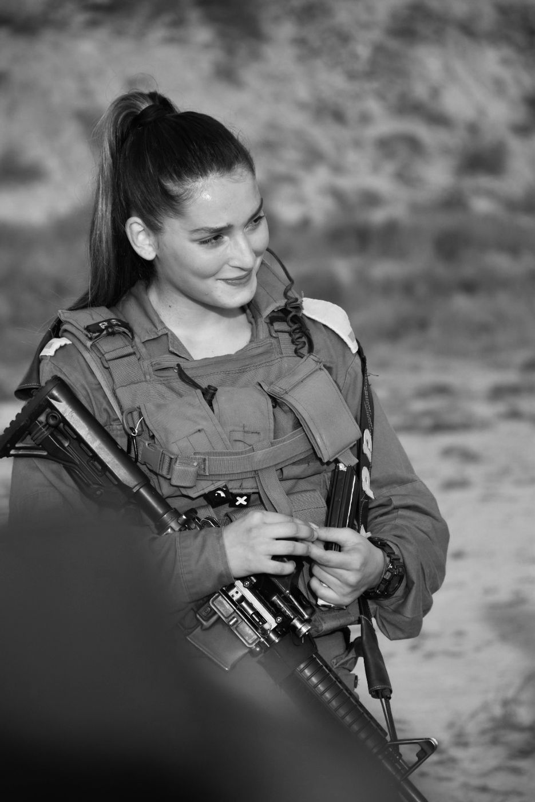

אפשר לשנות כיוון בלי למחוק את מי שהיינו
גדלתי בחברה החרדית, וכנערה בסיכון שאלתי שאלות שאין להן תשובות מוכנות. התגייסתי, סיימתי קורס קצינים ופיקדתי על לוחמים ולוחמות מכל קצוות החברה הישראלית.
במהלך השירות נפגעתי בתאונת דרכים קשה ובחרתי בצדק מאחה. אחר כך – אקרובטיקה אווירית: תוך חצי שנה מקום ראשון באליפות ישראל, ונבחרת ישראל באליפות העולם בדרום קוריאה.
מטרת חיי – לצמצם פערים בחברה הישראלית.
התוכנית
ארבע הרצאות
א׳
אל תכניסו אותי לאף משבצת הרצאת הדגל
המסע מהמגזר החרדי לקצונה קרבית, יזמות ואליפות העולם. על בחירה, זהות ואומץ.
לקהלכל הקהלים, כנסים, אירועי חברה
ב׳
לבחור בתיקון – יותר טוב לסלוח
סיפור תאונת הדרכים והבחירה בצדק מאחה. על אחריות, סליחה, חוסן והתמודדות עם משבר.
לקהלארגונים, אנשי חינוך, קהילות ומשפט
ג׳
אחדות היא לא אחידות
צמצום פערים בחברה הישראלית, חיבור בין עולמות ושיח מעבר לדעות קדומות.
לקהלרשויות, גופים ממשלתיים, מכינות
ד׳
לא חיכיתי להיות מוכנה – פשוט התחלתי
ספורט, התמדה ופריצת גבולות – איך בונים מסוגלות עצמית מאפס.
לקהלנוער בסיכון, נשים, צוותים
לקהלים
- ארגונים ו-HRמנהיגות, חוסן וגמישות בעולם שרץ מעבר לזמן
- אנשי חינוךלראות את הנער, לפני שרואים את ההתנהגות
- רשויותאחדות ולא אחידות – לחיות יחד בלי להיות דומים
- נוער וצעיריםנקודת הפתיחה שלך היא לא נקודת הסיום שלך
- העצמה נשיתלא חיכיתי להיות מוכנה – פשוט התחלתי
הקהל יצא ממנה עם חיוך, מחשבה וחיבור אמיתי.מנהל תיכון